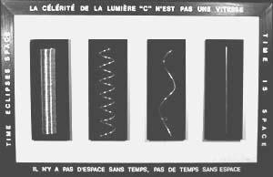

| < |
 |
For FolksWhy can nothing go faster than the speed of light? Here's a slightly better way to phrase the mystery: Why can nothing with a mass go like light? How does light go, and how does the way light goes differ from the way other things go? For light, the path is direct: time is space (rightmost panel). Everyone agrees that for light, time is space. For objects that are not light, objects with mass, the object has more time than space. The object carries history, a story to tell. Someone can sit and listen to the story a long time (leftmost panel), or the listener can be in a greater hurry (middle panels). The shape of the path looks more and more like light, but the path never, ever is just like light. "La célérité de lumière 'c' n'est pas une vitesse" in English means "The speed of light 'c' is not a velocity." "Il n'y a pas d'espace sans temps, pas de temps sans espace" in English means "There is no space without time, no time without space" |
For NerdsThe relativistic velocity of light is beta = 1. In differential form, this says the amount of change in space equals the amount of change in time. In integral form, this says the amount of space traveled by light is the amount of time passed. What all inertial observers agree on is the functional relation between space and time: it is one-to-one and onto. This function is invertible and a photon is its own antiparticle. For objects with a mass, beta < 1. In differential form, the amount of change in space is less than the amount of change in time. In integral form, this says the amount space traveled by a mass is less than the amount of time passed. There is a function that maps time onto space, but it is not one-to-one. The function is not invertible and each particle's antiparticle is distinct. |